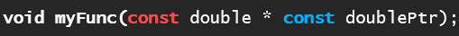

Week 8
Pointers
Pointers are variables whose values are memory addresses.
Referencing a value through a pointer is called indirection because we are using the address to find the value rather than directly accessing the value.
More on Indirection
To understand this concept lets imagine a block of memory as follows:
+-----------+
| ??? | <- Address 0x1000
+-----------+
| ??? | <- Address 0x1004
+-----------+
| ??? | <- Address 0x1008
+-----------+
| ??? | <- Address 0x100C
+-----------+
Suppose we create a variable
count and assign it the value of 7.
int count = 7;
+-----------+
| 7 | <- Address 0x1000 (count)
+-----------+
| ??? | <- Address 0x1004
+-----------+
| ??? | <- Address 0x1008
+-----------+
| ??? | <- Address 0x100C
+-----------+
int *countPtr = &count;
+-----------+
| 7 | <- Address 0x1000 (count)
+-----------+
| ??? | <- Address 0x1004
+-----------+
| ??? | <- Address 0x1008
+-----------+
| 0x1000 | <- Address 0x100C (countPtr)
+-----------+
countPtr holds the value 0x1000 which is the address of count.
The original variable,
count directly references the value 7.
countPtr on the other hand, indirectly references 7.
It tells you where to find the variable that holds the value 7.
Pointers Primer (video)
Before we get deeper into pointer details, here’s a quick video that explains the basics that was shared by a classmate (SpaceBoy22) in our class Discord:
Bro Code — C Programming Tutorial for Beginners 37 — Pointers
Pointer Size
A pointer is the size of the typical CPU register width in your system.
For an x86 system, pointers are generally 32-bits wide (4 bytes). For an x64 computer, pointers are generally 64-bits wide (8 bytes) unless you are running a 32-bit version of an app (which will use 32-bit pointers).
A bit is just a single 1 or 0 — so when we say “32 bits” or “64 bits,” we mean a chunk of 1s and 0s stored together.
Larger pointers (64-bit) allow addressing more memory, up to 16 exabytes theoretically, compared to 4 GB for 32-bit pointers.
More on registers
A register is a tiny, extremely fast storage location built right into the CPU. On modern 64-bit CPUs, each register holds exactly 64 bits (8 bytes).
The CPU uses these registers to:
- Hold operands for ALU operations (arithmetic, bitwise/logical, shift & rotate, comparison & conditional)
- Store intermediate results
- Keep track of instruction pointers and flags
Behind the scenes, the ALU takes inputs from CPU registers, performs one of these operations in a single clock cycle, then writes the result (and status flags like zero or carry) back into registers.
Because pointers need to reference any addressable location in memory, their size matches the register width.
- On a 32-bit system you get 32-bit (4 byte) pointers; on a 64-bit system you get 64-bit (8 byte) pointers — unless you’re running a 32-bit app on a 64-bit system, which will still use 32-bit pointers.
Declaring a Pointer
To distinguish between a pointer and a regular variable, we use * to indicate
to the compiler that the variable is a pointer.
int *countPtr;
This is read as "countPtr is a pointer to an int".
It can be helpful to name a pointer in a way that makes it clear it is a pointer
to the programmer such as ending the variable name with Ptr.
Note: Pointer Declaration Syntax Variations
There are several valid ways to write a pointer declaration, depending on where you place the *:
int *countPtr; // * touches the name, emphasizing the name is a pointer
int* countPtr; // * touches the type, emphasizing the pointer type
int * countPtr; // * is between type and name, neutral style
All three are equivalent to the compiler, as whitespace around * is ignored.
However, the choice of style often depends on team coding standards or personal preference.
For example, int* countPtr; highlights that the type is a
pointer-to-int.
Whereas int *countPtr; emphasizes that *countPtr is the pointer
variable.
Be cautious when declaring multiple variables in a single line, as
the * placement can lead to confusion (see below).
Note: Avoiding Ambiguity in Pointer Declarations
When declaring multiple variables, it’s best to split them over multiple lines.
For example, consider the following code, which creates one pointer and one regular variable:
int *countPtr, count;
This can be ambiguous, especially with the alternate syntax:
int* countPtr, count;
Or:
int * countPtr, count;
This can make it look like both variables are pointers.
To avoid ambiguity, split declarations over multiple lines:
int* countPtr;
int count;
Initializing a Pointer
When we define a pointer we should always initialize it with some value, even if
that value is NULL.
int *countPtr = NULL;
Note we can also use 0 in place of NULL since NULL refers to address 0.
int *countPtr = 0;
However, in practice it is best to be explicit about it being NULL.
The Address (&) Operator
The unary address operator & returns the address of its operand.
int y = 5;
int *yPtr = &y;
We use the &y to assign the address of y to yPtr.
The Indirection/Dereferencing (*) Operator
The dereferencing operator * allows us to follow a pointer to access the value that
it points to.
printf("%d", *yPtr); // prints 5
Dereferencing an uninitialized or NULL pointer (e.g., int *ptr; printf("%d", *ptr);)
causes undefined behavior, often leading to program crashes.
Always ensure a pointer points to a valid memory address before dereferencing.
Note: Dual Meanings of *
In C * has different meanings depending on context:
- In a declaration, it means the variable is a pointer to the given type.
- In an expression, it means dereference the pointer (access the value at the address).
int x = 10;
int *ptr = &x; // * in declaration: ptr is a pointer
printf("%d", *ptr); // * in expression: dereference to get 10
const with Pointers
You will be tested on this!
const can be used in two ways with pointers in a function:

-
The first const means you cannot change the value being pointed to (
*dPtris read-only). -
The second const means you cannot change the pointer itself (you can’t make
dPtrpoint somewhere else).
Bob recommended remembering it this way:
- if
constis beside the type it affects the data- therefore you can't change the data that the pointer dereferences.
- if
constis beside the pointer it affects the pointer- therefore you can't make this pointer point to a different address.
Note:
This second const must come after the * but before the variable name.
Writing const double const *dPtr is not equivalent
— both uses of const in this version apply to the data and not to the pointer.
Incrementing a Pointer
If you increment a pointer (++myPtr), it simply moves to the next address in
memory for that type — so it now points to the “next” item.
If you increment a pointer inside a function, only the local copy is changed. The original pointer in the caller still points to the same place unless you pass a pointer-to-pointer.
This means that inside a function, you can use ++ or -- to loop through
the memory next to the pointer without losing the original starting point.